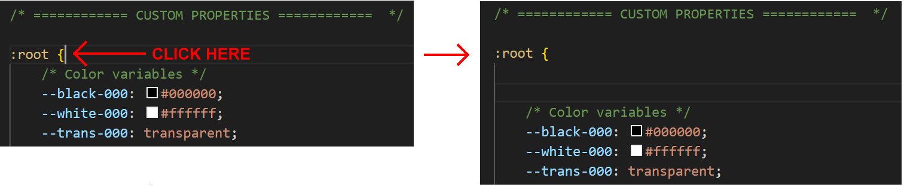
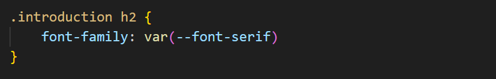

Learning Goals
At the end of this Tutorial, you will be able to:
- Using system fonts from the font-stack with CSS custom properties.
- Applying a fluid typographic scale to adjust font sizes in a web page responsively according to the viewport width.
Sample files to download
Download the following web page to your websites/exercises folder
Download the following stylesheet to your websites/exercises/css folder
Updating the style-11 stylesheet
Your first task is to update the appearance of the page-11.html web page by adding new style rules to its linked style-11.css stylesheet.
In VS Code, open the style-11.css file and add the following declaration block for .section-selector-1 to the end of the stylesheet.
.section-selector-1 { background-color: #000 }
.section-selector-1 .badge span { background-color: #fff; color: #000 }
.section-selector-1 h2, .section-selector-1 p { color: #fff }
.section-selector-1 h2 { letter-spacing: 1px }
.section-selector-1 h2 span { color: var(--amber-400) }Save the style-11.css stylesheet and view the linked page-11.html web page in your browser. The first <section> block of content should look as shown below.

Add the following declaration block for .section-selector-2 to the end of the stylesheet.
.section-selector-2 {
background-image: linear-gradient(90deg, var(--sky-100), var(--sky-300))
}
.section-selector-2 h2 { letter-spacing: 1px }
.section-selector-2 h2 span { color: var(--red-600) }Save the style-11.css stylesheet and view the linked page-11.html web page in your browser. The second <section> block of content should look as shown below.

Add the following declaration block for .section-selector-3 to the end of the stylesheet.
.section-selector-3 { background-color: var(--yellow-300) }
.section-selector-3 h2 { font-weight: 400 }
.section-selector-3 h2 span { font-weight: 700; color: #000 }Save the style-11.css stylesheet and view the linked page-11.html web page in your browser. The third <section> block of content should look as shown below.

Add the following declaration block for .section-selector-4 to the end of the stylesheet.
.section-selector-4 { background-color: var(--trend-800) }
.section-selector-4 .badge span {
background-color: transparent;
color: var(--sky-400);
}
.section-selector-4 h2 { color: #fff }
.section-selector-4 p { color: var(--gray-200) }Save the style-11.css stylesheet and view the linked page-11.html web page in your browser. The fourth <section> block of content should look as shown below.

Add the following declaration block for .section-selector-5 to the end of the stylesheet.
.section-selector-5 { background-color: var(--trend-050) }
.section-selector-5 p { color: var(--gray-700) }
Add the following declaration block for .section-selector-6 to the end of the stylesheet.
.section-selector-6 { background-color: var(--purple-200) }
.section-selector-6 h2 {
letter-spacing: 3px;
color: var(--blue-800)
}
.section-selector-6 h2 span { color: var(--red-600) }
Save the style-11.css stylesheet and view the linked page-11.html web page in your browser. The sixth <section> block of content should look as shown below.

About the system font stack
A web page that does not require the loading of any external font files will load more quickly than a page that does. However, particularly on Microsoft Windows, the default font may not look very attractive.
All modern operating systems offer a so-called stack of built-in fonts. The easiest way to use these fonts is to specify a generic font-family name as a custom property in your CSS.
Follow these steps.
- In VS Code, display the style-11.css stylesheet and scroll to the beginning of the custom properties list.
- Click at the start of the list and press the Enter key a few times. 
- Copy and paste the following three CSS custom properties in your stylesheet.
/* Alternatives to default sans-serif font */ --font-sans: -apple-system, system-ui, BlinkMacSystemFont, Segoe UI, Roboto, Helvetica Neue, Fira Sans, Ubuntu, Oxygen, Oxygen Sans, Cantarell, Droid Sans, Apple Color Emoji, Segoe UI Emoji, Segoe UI Emoji, Segoe UI Symbol, Lucida Grande, Helvetica, Arial, sans-serif; /* Alternatives to default serif font */ --font-serif: Cambria, "Hoefler Text", Utopia, "Liberation Serif", "Nimbus Roman No9 L Regular", Times, "Times New Roman", serif; /* Alternatives to default monospace font */ --font-monospace: Menlo, Monaco, Consolas, "Liberation Mono", "Courier New", monospace; - Save your style-11.css stylesheet.
To use any of these custom properties later in your CSS file, you would enter a style rule such as the following:
Updating the default sans-serif font
By default, all web browsers display text in a sans-serif font. To improve the appearance of the default font, update the style-11.css stylesheet as shown below.

Save your style-11.css stylesheet and view the page-11.html page psage in your browser.
About fluid typography
Fluid typography means that the font sizes of text – headings, paragraphs, bulleted lists, menu items – on a web page ‘scale’ (shrink or expand) smoothly according to the width of the user’s device viewport.
Here are some examples of web pages that did not use fluid typography to scale font sizes correctly for mobile phone screens.

The animated gif below is taken from an article on the CSS Tricks website that features the widely-used implementation of the fluid typography approach developed by Australian web designer Mike Riethmuller.

The modern approach is to use the CSS clamp property and include the range preset values as custom properties in your stylesheets.
You can then include the preset values as custom properties in your stylesheets. See the example below.
Add custom preperties for fluid type sizes
Follow these steps.
- Go to the Fluid Type Scale Calculator website.
- Copy the preset font scale at the right of the screen.
- In VS Code, open your style-10.css stylesheet and paste in the copied responsive type scale.
 You can paste them just after the system font stack custom properties and before the colour custom properties.
You can paste them just after the system font stack custom properties and before the colour custom properties. - Scroll to the part of the stylesheet that contains the fixed font sizes and update it as follows.
 The values will display nicely for most cases.
The values will display nicely for most cases. - For the .section-selector-1 block, add these two new style rules.

- For the .section-selector-4 block, add this new style rule.

- For the .section-selector-6 block, add this new style rule.

When finished, save your stylesheet and display the web page at different screen sizes.
Updating your website home page
Now that you have created and styled a new web page, let’s add a hyperlink to it on the ‘home page’ of your web site. Follow the steps below:
- In VS Code, open this HTML file in your ‘main’ websites folder: index.html
- Copy-and-paste the following new line to your web page, directly under the line that contains the link to the page-10.html web page.
<p><a href="exercises/page-11.html">Web Page With Fonts</a></p>
Save your index.html web page and view the result in your browser.
Uploading your files to Github
You are now ready to upload your work to your account on Github.
- Open a new tab in your web browser and go to Github.com. If you are not already signed in to your Github account, sign in now.

- On your Github home page, click the ‘repo’ that holds your web pages. Its name will look as follows, where username is your chosen username on Github.
username.github.io

- On the next Github screen displayed, near the right of the screen, you can see a button named Add file. Click on it.

- From the dropdown list displayed, choose the option Upload files.

- In File Explorer (Windows) or Finder (Apple Mac), drag-and-drop your index.html file and your 📁 assets and 📁 exercises sub-folders to upload them to your repository on Github.

- Scroll down to the bottom of the Github screen, and accept or edit the short message (Add files via upload) in the Commit changes box.
- Finally, click the green Commit changes button to upload your files.

Your updated sample web page is now published on Github at a web address similar to the following:
https://username.github.io/exercises/page-11.html
It may take a few minutes for your upload files to appear on GitHub.